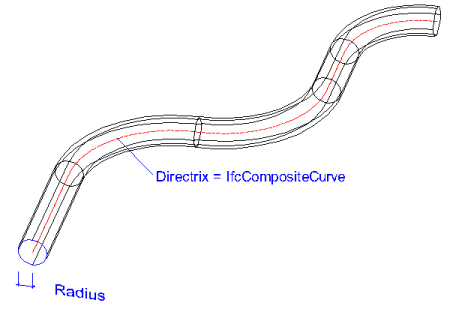

8.8.3.34 IfcSweptDiskSolid
| Festkörper - Entlang einer Leitlinie extrudierte Kreisscheibe |
An IfcSweptDiskSolid represents the 3D shape by a sweeping representation scheme allowing a two dimensional
circularly bounded plane to sweep along a three dimensional Directrix through space.
The StartParam and EndParam parameter are optional, if not provided they default to the start and
end of the Directrix. Only if the Directrix is given by a bounded or by a closed curve, it is
permissible to omit the values of StartParam and EndParam.
If the transitions between consecutive segments of the Directrix are not tangent continuous, the resulting
solid is created by a miter at half angle between the two segments. Informal proposition restricts the permissible
angle between two non-tangent continuous segments.
Figure 308 illustrates an example.
- Directrix given as IfcCompositeCurve being tangent continuous between its segments
- Directrix being a bounded and open curve
- No StartParam and EndParam are provided, start and end default to start and end of the bounded
curve of the Directrix
NOTE Although the example shows a Directrix as a composite curve on a planar
reference surface, the definition of IfcSweptDiskSolid is not restricted to be based on planer curves. However
view definitions or implementer agreements may provide restrictions.
 |
|
Figure 308 — Swept disk solid geometry
|
NOTE Definition according to ISO/CD 10303-42:1992
A swept disk solid is the solid produced by sweeping a circular disk along a three dimensional curve. During the
sweeping operation the normal to the plane of the circular disk is in the direction of the tangent to the directrix
curve and the center of the disk lies on the directrix. The circular disk may, optionally, have a central hole, in this
case the resulting solid has a through hole, or, an internal void when the directrix forms a close curve.
NOTE Entity adapted from swept_disk_solid defined in ISO
10303-42.
HISTORY New entity in IFC2x2.
IFC4 CHANGE The attribute StartParam and EndParam have been
made optional.
Informal Propositions:
- If the Directrix curve definition is not tangent continuous, the transition between the segments has to be
within an acceptable limit of tangent discontinuity. Very sharp edges may result in nearly impossible miter.
Implementer agreements may define acceptable limits for tangent discontinuity.
- The segments of the Directrix shall be long enough to apply the Radius. In case of an arc segment
forming part of the Directrix, its radius shall be greater then the disk Radius
- The Directrix shall not be based on an intersecting curve.
XSD Specification:
<xs:element name="IfcSweptDiskSolid" type="ifc:IfcSweptDiskSolid" substitutionGroup="ifc:IfcSolidModel" nillable="true"/>
<xs:complexType name="IfcSweptDiskSolid">
<xs:complexContent>
<xs:extension base="ifc:IfcSolidModel">
<xs:sequence>
<xs:element name="Directrix" type="ifc:IfcCurve" nillable="true"/>
</xs:sequence>
<xs:attribute name="Radius" type="ifc:IfcPositiveLengthMeasure" use="optional"/>
<xs:attribute name="InnerRadius" type="ifc:IfcPositiveLengthMeasure" use="optional"/>
<xs:attribute name="StartParam" type="ifc:IfcParameterValue" use="optional"/>
<xs:attribute name="EndParam" type="ifc:IfcParameterValue" use="optional"/>
</xs:extension>
</xs:complexContent>
</xs:complexType>
EXPRESS Specification:
|
|
| DirectrixDim | : | Directrix.Dim = 3; | | InnerRadiusSize | : | (NOT EXISTS(InnerRadius)) OR (Radius > InnerRadius); | | DirectrixBounded | : | (EXISTS(StartParam) AND EXISTS(EndParam)) OR
(SIZEOF(['IFCGEOMETRYRESOURCE.IFCCONIC', 'IFCGEOMETRYRESOURCE.IFCBOUNDEDCURVE'] * TYPEOF(Directrix)) = 1); |
|
 EXPRESS-G diagram
EXPRESS-G diagram
Attribute Definitions:
| Directrix | : |
The curve used to define the sweeping operation. The solid is generated by sweeping a circular disk along the Directrix.
|
| Radius | : |
The Radius of the circular disk to be swept along the directrix. Denotes the outer radius, if an InnerRadius is applied.
|
| InnerRadius | : |
This attribute is optional, if present it defines the radius of a circular hole in the centre of the disk.
|
| StartParam | : |
The parameter value on the Directrix at which the sweeping operation commences. If no value is provided the start of the sweeping operation is at the start of the Directrix..
IFC4 CHANGE The attribute has been changed to OPTIONAL with upward compatibility for file-based exchange.
|
| EndParam | : |
The parameter value on the Directrix at which the sweeping operation ends. If no value is provided the end of the sweeping operation is at the end of the Directrix..
IFC4 CHANGE The attribute has been changed to OPTIONAL with upward compatibility for file-based exchange.
|
Formal Propositions:
| DirectrixDim | : |
The Directrix shall be a curve in three dimensional space.
|
| InnerRadiusSize | : |
If InnerRadius exists then Radius denoting the outer radius shall be greater than InnerRadius.
|
| DirectrixBounded | : |
If the values for StartParam or EndParam are omited, then the Directrix has to be a bounded or closed curve.
IFC4 CHANGE New WHERE rule.
|
Inheritance Graph:
 Link to this page
Link to this page